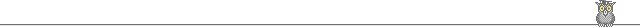

2026/9/23 更新
1997.1.1開設
keyword[tw] or [ot]，Mesh[mh]，著者[au]，フルネーム [fau], 1st author [1au], 施設[ad], タイトル[ti]，言語
: eng[la] or jpn[la]，出版年 : 2002:2004[dp]，雑誌名 : circulation[ta]
[tw] (jacc[ta] or J Cardiovasc Electrophysiol [ta] or Heart Rhythm [ta])

Explore
子どもの不整脈専門医・鈴木嗣敏の
活動の記録
新聞・テレビで紹介された記事と、学会･講演の仕事をそれぞれのページにまとめました。
Milestones
小児不整脈専門の医師
小児カテーテルアブレーション
治療を専門とする医師としての
これまでの歩み
- 研究
アブレーション1000件の論文がHeart Rhythmに掲載
2006年の転勤から12年で小児不整脈科のアブレーション件数が1000件を超えたのを記念して、シニアレジデントの加藤有子先生にまとめてもらった論文が、Heart Rhythm（アメリカ不整脈学会雑誌）に掲載されました。

- 診療
3Dマッピングシステム「リズミア（Rhythmia）」を導入
アブレーション治療用の最新の3D mappingシステムで、さらに高精度での治療が可能になりました。
- 診療
日本初の「小児不整脈科」が設立
日赤和歌山医療センターから中村好秀先生をお迎えしました。
- 経歴
東京女子医科大学から大阪市立総合医療センターへ

Hospital
大阪市立総合医療センター
小児循環器・不整脈内科
- 病院の小児循環器・不整脈内科紹介ページ
- 入院・宿泊施設案内大阪市立総合医療センター入院案内・ペアレンツハウス大阪案内（2021/1/6 update）
- 「カテ室五番」の紹介アブレーション治療専用のカテーテル検査室
Resources
資料・アプリ
患者さんとご家族、医療者に向けて公開している資料とアプリです。

カテのアンギオ画像合成ツール
カテ位置のRAO・LAO透視画像を合成するhtml版・mac版アプリです。html版はWindowsでも使えますが保存先を指定できません。mac版は保存先を指定できます。
Personal
ちょっと個人的なこと


う〜ん 何度読んでも，すばらしい詩です．母親譲りの才能だそうです (おやばか．．．)